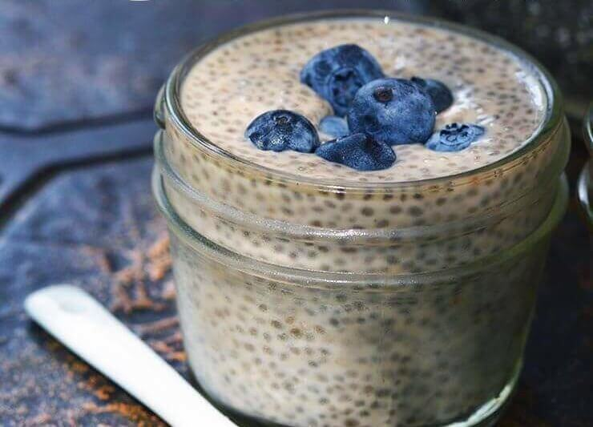

Chia Seed Pudding

I am pleasantly surprised by how delicious this is every time I make it. Works as a snack, breakfast, or treat! You can also vary it up by adding things such as cocoa powder, fruit, nut butter, or matcha!
Ingredients
- 2 cups milk of your preference (almond, oat, cow...)
- 1/2 cup chia seeds
- 1/2 tsp vanilla extract
- 1/4 cup maple syrup or other sweetener, more or less to taste
- 1/8 cup rolled oats
- 1/4 tsp cinnamon (optional)
Steps
- Blend all ingredients except chia seeds in a blender until smooth. Whisk in chia seeds.
- Pour mixture into a jar or glass container and place in the refrigerator for at least 4 hours or overnight to gel.
- Shake or whisk a few times within the first hour to help it gel evenly.